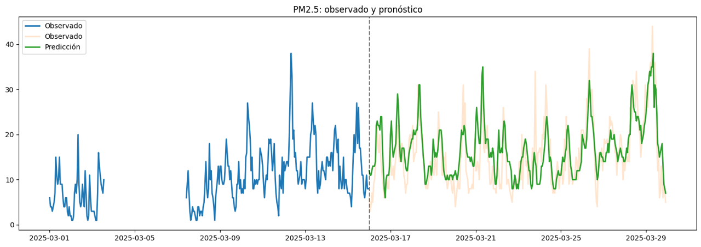
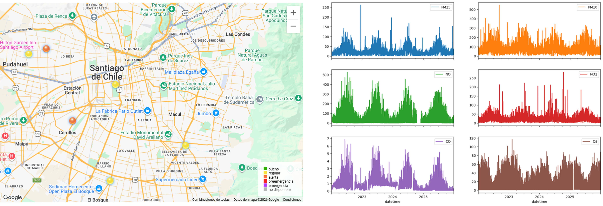
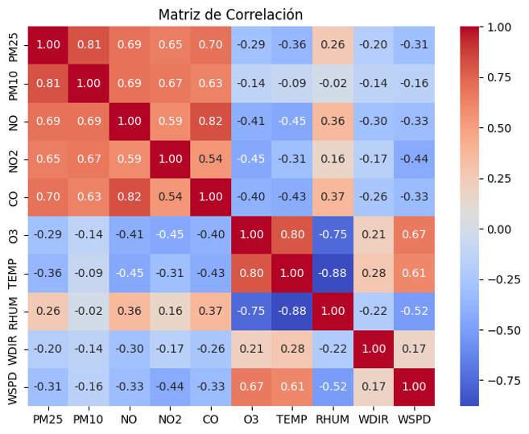
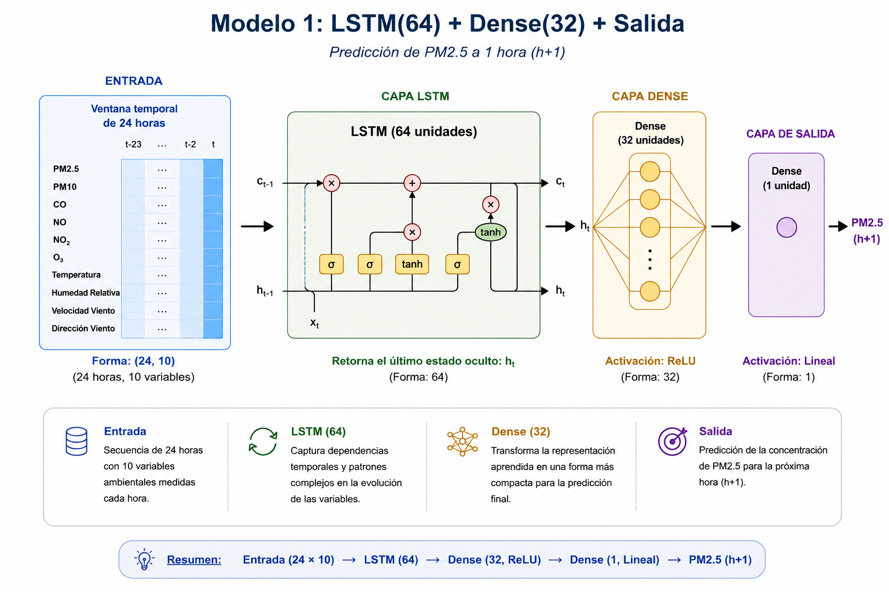
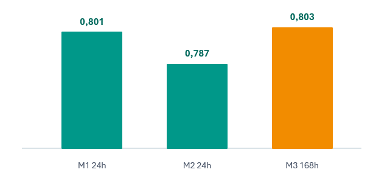
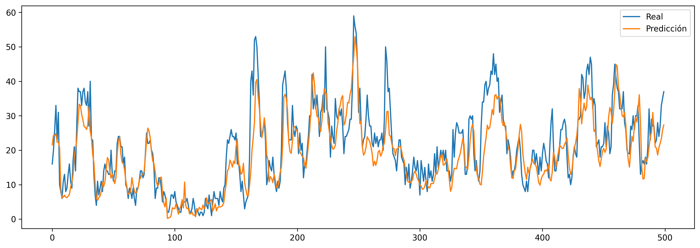
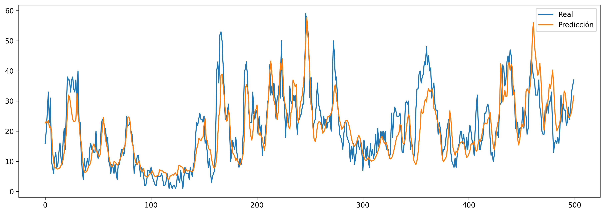
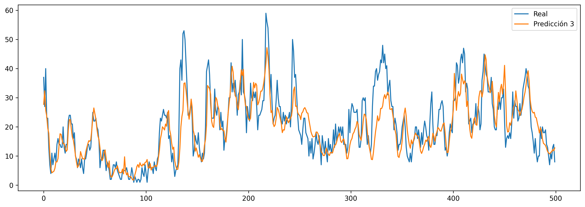

Pronóstico Temporal de Contaminantes Atmosféricos
Modelo de Deep Learning basado en redes LSTM para predecir la concentración de PM2.5 con un horizonte de una hora, a partir de series temporales locales de calidad del aire y variables meteorológicas.
Desarrollador independiente

Contexto del Problema y Objetivos Técnicos
La capacidad de anticipar episodios de contaminación atmosférica constituye una herramienta fundamental para la gestión de la calidad del aire. Un pronóstico confiable de las concentraciones de PM2.5 permite implementar medidas preventivas antes de que ocurran eventos críticos, como restricciones a emisiones industriales, gestión del tránsito, recomendaciones a la población sensible y apoyo a la toma de decisiones por parte de las autoridades ambientales. En este contexto, disponer de predicciones de corto y largo plazo resulta tan relevante como contar con mediciones en tiempo real.
Los modelos tradicionales de pronóstico atmosférico se basan en la resolución numérica de ecuaciones físicas que describen el transporte, dispersión y transformación química de contaminantes. Estos modelos requieren una gran cantidad de información meteorológica, emisiones, topografía y datos satelitales de escala regional y global, además de un elevado costo computacional para su ejecución operacional.
El objetivo de este proyecto es evaluar si una arquitectura LSTM, alimentada únicamente con información histórica local, es capaz de anticipar la concentración de PM2.5 con una hora de antelación. La red aprende de forma automática las dependencias temporales entre el contaminante objetivo y las variables meteorológicas, identificando patrones recurrentes asociados a la dinámica atmosférica sin necesidad de resolver explícitamente modelos físicos de gran escala.
"Mientras los modelos físicos buscan reproducir la atmósfera resolviendo sus ecuaciones fundamentales, las redes LSTM aprenden directamente de la historia local, identificando patrones temporales que permiten realizar pronósticos precisos con un costo computacional significativamente menor."
Conjunto de Datos
El modelo fue entrenado utilizando información proveniente de la estación Parque O'Higgins, perteneciente a la red oficial del Sistema Nacional de Información de Calidad del Aire (SINCA) del Ministerio del Medio Ambiente de Chile. Los registros fueron descargados desde los servidores Airviro de SINCA y corresponden a mediciones horarias continuas de contaminantes atmosféricos y variables meteorológicas.
El período de estudio comprende desde el 1 de enero de 2022 hasta el 15 de junio de 2026, abarcando más de cuatro años de observaciones. Esta extensión temporal permite incorporar variaciones estacionales, eventos extremos y cambios meteorológicos característicos de distintas épocas del año, proporcionando un conjunto de entrenamiento suficientemente representativo para el aprendizaje de patrones temporales.

Variables utilizadas
- PM2.5 (variable objetivo)
- PM10
- NO (Óxido Nítrico)
- NO₂ (Dióxido de Nitrógeno)
- CO (Monóxido de Carbono)
- Ozono
- Temperatura del aire
- Humedad relativa
- Velocidad del viento
- Dirección del viento
Todas las variables se encuentran muestreadas con resolución horaria, formando un data set de 10 series temporales utilizado para entrenar el modelo de Deep Learning. Para abordar el problema desde un enfoque supervisado, cada muestra de entrenamiento se construye mediante una ventana deslizante de 24 horas. En consecuencia, la red recibe como entrada las observaciones registradas durante las últimas 24 horas de todas las variables predictoras (incluido el propio PM2.5) y aprende a predecir la concentración de PM2.5 una hora hacia el futuro.
Análisis Exploratorio de los Datos

Como parte del análisis exploratorio se evaluó la correlación lineal entre todas las variables ambientales consideradas en el estudio. La matriz permite identificar qué variables presentan mayor asociación con la concentración de PM2.5 y, por tanto, cuáles poseen un mayor potencial predictivo para el modelo.
Se observa que PM2.5 presenta una fuerte correlación positiva con PM10, CO, NO y NO₂, indicando que estos contaminantes evolucionan conjuntamente y aportan información para estimar las concentraciones futuras de material particulado fino.
Además, variables como la temperatura del aire, la velocidad del viento y el ozono (O₃) muestran correlaciones negativas con PM2.5, comportamiento consistente con condiciones atmosféricas que favorecen la dispersión o transformación de los contaminantes presentes en la atmósfera.
La matriz de correlación permite verificar que las variables meteorológicas y los contaminantes gaseosos contienen información complementaria para explicar la variabilidad temporal del PM2.5, justificando su incorporación conjunta como entradas del modelo LSTM.
Modelos LSTM Propuestos
Con el objetivo de estudiar el efecto de la arquitectura y de la memoria temporal sobre el desempeño predictivo, se implementaron tres modelos utilizando TensorFlow/Keras. Todos fueron entrenados mediante el optimizador Adam, función de pérdida Mean Squared Error (MSE) y una estrategia de Early Stopping para prevenir sobreajuste.
Las configuraciones difieren principalmente en la complejidad de la red y en el tamaño de la ventana temporal utilizada como entrada, permitiendo comparar modelos con distinta capacidad para capturar dependencias de corto y largo plazo.
| Modelo | Ventana Temporal | Arquitectura | Objetivo |
|---|---|---|---|
| Modelo 1 | 24 horas | LSTM(64) → Dense(32) → Dense(1) | Modelo base de referencia. |
| Modelo 2 | 24 horas | LSTM(64) → Dropout → LSTM(32) → Dense(1) | Mayor profundidad y regularización. |
| Modelo 3 | 168 horas (7 días) | LSTM(64) → Dense(32) → Dense(1) | Capturar ciclos semanales completos. |
Arquitectura del Modelo Base
La arquitectura base corresponde a una red Long Short-Term Memory (LSTM) diseñada para realizar pronósticos horarios de PM2.5 a partir de una ventana temporal de 24 horas. Cada secuencia de entrada posee dimensión (24 × 10), donde las diez variables ambientales son procesadas de manera conjunta para capturar su evolución temporal.

El modelo utiliza una capa LSTM de 64 unidades para aprender las dependencias temporales presentes en la serie. La representación obtenida es refinada mediante una capa Dense de 32 neuronas con activación ReLU, mientras que una neurona de salida lineal genera la predicción de la concentración de PM2.5 para la hora siguiente.
Resultados
Los tres modelos fueron evaluados sobre el conjunto de prueba utilizando las métricas MAE, RMSE y R². La siguiente tabla resume el desempeño obtenido por cada arquitectura, junto con el coeficiente de determinación comparado de forma gráfica.
| Modelo | Ventana Temporal | MAE | RMSE | R² |
|---|---|---|---|---|
| Modelo 1 | 24 h | 5,36 | 7,66 | 0,801 |
| Modelo 2 | 24 h | 5,34 | 7,94 | 0,787 |
| Modelo 3 | 168 h | 5,32 | 7,64 | 0,803 |

El Modelo 3, entrenado con una ventana de 168 horas, obtuvo el mejor desempeño global: el R² más alto (0,803) y el MAE más bajo (5,32), lo que sugiere que incorporar el ciclo semanal completo aporta información relevante para el pronóstico. El Modelo 2, pese a contar con mayor profundidad y regularización, no logró superar al modelo base (Modelo 1), lo que indica que aumentar la complejidad de la red no se tradujo en una mejor capacidad de generalización para este problema. En conjunto, las diferencias entre los tres modelos son moderadas (R² entre 0,787 y 0,803), lo que sugiere que la ventana de 24 horas ya captura gran parte de la señal predictiva relevante.
Series de Tiempo: Predicción vs. Observación
Modelo 1

Modelo 2

Modelo 3

Stack Tecnológico
El proyecto fue desarrollado en Python, utilizando TensorFlow/Keras para el diseño y entrenamiento de los modelos LSTM, Pandas y NumPy para el procesamiento de los datos, y Matplotlib para la generación de gráficos.
Conclusiones
Los resultados muestran que una red LSTM alimentada únicamente con información histórica local es capaz de pronosticar la concentración de PM2.5 con una hora de antelación y un desempeño competitivo (R² entre 0,787 y 0,803), sin recurrir a modelos físicos de gran escala. La ventana de 168 horas obtuvo el mejor resultado, sugiriendo que el ciclo semanal aporta información útil, aunque las diferencias frente a la ventana de 24 horas son moderadas. Como trabajo futuro, se plantea extender el horizonte de predicción más allá de una hora y evaluar la incorporación de datos de otras estaciones de monitoreo.